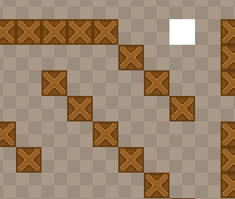

In this part we'll create a simple hero sprite and use the HaxeFlixel built-in pathfinding algorithm to move it around obstacles.
The FxTilemap class, which is currently used to render our tilemap, has a method called findPath(), which can be given the starting point and the destination point, and it will produce an array of FxPoint instances, which the object has to travel.
The resulting array of FxPoint objects can be then given to a FxPath instance, which will animate an object slowly (or quickly, depending on the speed) moving to the destination, according to the path nodes.
Start by declaring two new variables:
private var hero:FlxSprite;
private var path:FlxPath;
Instantiate them in the create() function:
hero = new FlxSprite(16, 16);
hero.makeGraphic(PlayState.TILE_WIDTH, PlayState.TILE_HEIGHT, FlxColor.WHITE);
add(hero);
path = new FlxPath();
Add these lines to tell the FxTilemap object which tiles are walkable, and which ones are not. In this case, the 0 and 1 tiles represent the void and the walls. Set their collision type to FlxObject.ANY using the setTileProperties() method.
tileMap.setTileProperties(0, FlxObject.ANY);
tileMap.setTileProperties(1, FlxObject.ANY);
tileMap.setTileProperties(2, FlxObject.NONE);
Now find the bit that handles mouse clicks in update(), and edit it like so:
// Mouse clicks
if (FlxG.mouse.justReleased){
var tileCoordX:Int = Math.floor(FlxG.mouse.x / TILE_WIDTH);
var tileCoordY:Int = Math.floor(FlxG.mouse.y / TILE_HEIGHT);
movementMarker.visible = true;
if (tileMap.getTile(tileCoordX, tileCoordY) == 2) {
var nodes:Array<FlxPoint> = tileMap.findPath(FlxPoint.get(hero.x + TILE_WIDTH/2, hero.y + TILE_HEIGHT/2), FlxPoint.get(tileCoordX * TILE_WIDTH + TILE_WIDTH/2, tileCoordY * TILE_HEIGHT + TILE_HEIGHT/2));
if (nodes != null) {
path.start(hero, nodes);
movementMarker.loadGraphic(AssetPaths.marker_move__png, false, 16, 16);
}else {
movementMarker.loadGraphic(AssetPaths.marker_stop__png, false, 16, 16);
}
}else {
movementMarker.loadGraphic(AssetPaths.marker_stop__png, false, 16, 16);
}
movementMarker.setPosition(tileCoordX * TILE_WIDTH, tileCoordY * TILE_HEIGHT);
}
When the user clicks a walkable tile, we create a new node array using the findPath() method. If the method returns null, that means that a path could not be found. If it exists, however, we pass it to the start() method of our FxPath object and move our hero around.
Here's the full PlayState.hx class:
package ;
import flixel.FlxCamera;
import flixel.FlxG;
import flixel.FlxObject;
import flixel.FlxSprite;
import flixel.FlxState;
import flixel.tile.FlxTilemap;
import flixel.util.FlxColor;
import flixel.util.FlxPath;
import flixel.util.FlxPoint;
import openfl.Assets;
/**
* A FlxState which can be used for the actual gameplay.
*/
class PlayState extends FlxState
{
private var tileMap:FlxTilemap;
public static var TILE_WIDTH:Int = 16;
public static var TILE_HEIGHT:Int = 16;
public static var LEVEL_WIDTH:Int = 50;
public static var LEVEL_HEIGHT:Int = 50;
public static var CAMERA_SPEED:Int = 8;
private var camera:FlxCamera;
private var cameraFocus:FlxSprite;
private var movementMarker:FlxSprite;
private var hero:FlxSprite;
private var path:FlxPath;
/**
* Function that is called up when to state is created to set it up.
*/
override public function create():Void
{
super.create();
tileMap = new FlxTilemap();
tileMap.loadMap(Assets.getText("assets/data/map.csv"), "assets/images/tileset.png", TILE_WIDTH, TILE_HEIGHT, 0, 1);
tileMap.setTileProperties(0, FlxObject.ANY);
tileMap.setTileProperties(1, FlxObject.ANY);
tileMap.setTileProperties(2, FlxObject.NONE);
add(tileMap);
cameraFocus = new FlxSprite();
cameraFocus.makeGraphic(1, 1, FlxColor.TRANSPARENT);
add(cameraFocus);
camera = FlxG.camera;
camera.follow(cameraFocus, FlxCamera.STYLE_LOCKON);
movementMarker = new FlxSprite();
movementMarker.visible = false;
add(movementMarker);
hero = new FlxSprite(16, 16);
hero.makeGraphic(PlayState.TILE_WIDTH, PlayState.TILE_HEIGHT, FlxColor.WHITE);
add(hero);
path = new FlxPath();
}
/**
* Function that is called when this state is destroyed - you might want to
* consider setting all objects this state uses to null to help garbage collection.
*/
override public function destroy():Void
{
super.destroy();
}
/**
* Function that is called once every frame.
*/
override public function update():Void
{
super.update();
// Camera movement
if (FlxG.keys.anyPressed(["DOWN", "S"])) {
cameraFocus.y += CAMERA_SPEED;
}
if (FlxG.keys.anyPressed(["UP", "W"])) {
cameraFocus.y -= CAMERA_SPEED;
}
if (FlxG.keys.anyPressed(["RIGHT", "D"])) {
cameraFocus.x += CAMERA_SPEED;
}
if (FlxG.keys.anyPressed(["LEFT", "A"])) {
cameraFocus.x -= CAMERA_SPEED;
}
// Camera bounds
if (cameraFocus.x < FlxG.width / 2) {
cameraFocus.x = FlxG.width / 2;
}
if (cameraFocus.x > LEVEL_WIDTH * TILE_WIDTH - FlxG.width / 2) {
cameraFocus.x = LEVEL_WIDTH * TILE_WIDTH - FlxG.width / 2;
}
if (cameraFocus.y < FlxG.height / 2) {
cameraFocus.y = FlxG.height / 2;
}
if (cameraFocus.y > LEVEL_HEIGHT * TILE_HEIGHT - FlxG.height / 2) {
cameraFocus.y = LEVEL_HEIGHT * TILE_HEIGHT - FlxG.height / 2;
}
// Mouse clicks
if (FlxG.mouse.justReleased){
var tileCoordX:Int = Math.floor(FlxG.mouse.x / TILE_WIDTH);
var tileCoordY:Int = Math.floor(FlxG.mouse.y / TILE_HEIGHT);
movementMarker.visible = true;
if (tileMap.getTile(tileCoordX, tileCoordY) == 2) {
var nodes:Array<FlxPoint> = tileMap.findPath(FlxPoint.get(hero.x + TILE_WIDTH/2, hero.y + TILE_HEIGHT/2), FlxPoint.get(tileCoordX * TILE_WIDTH + TILE_WIDTH/2, tileCoordY * TILE_HEIGHT + TILE_HEIGHT/2));
if (nodes != null) {
path.start(hero, nodes);
movementMarker.loadGraphic(AssetPaths.marker_move__png, false, 16, 16);
}else {
movementMarker.loadGraphic(AssetPaths.marker_stop__png, false, 16, 16);
}
}else {
movementMarker.loadGraphic(AssetPaths.marker_stop__png, false, 16, 16);
}
movementMarker.setPosition(tileCoordX * TILE_WIDTH, tileCoordY * TILE_HEIGHT);
}
}
}The hero now moves when you click around:
